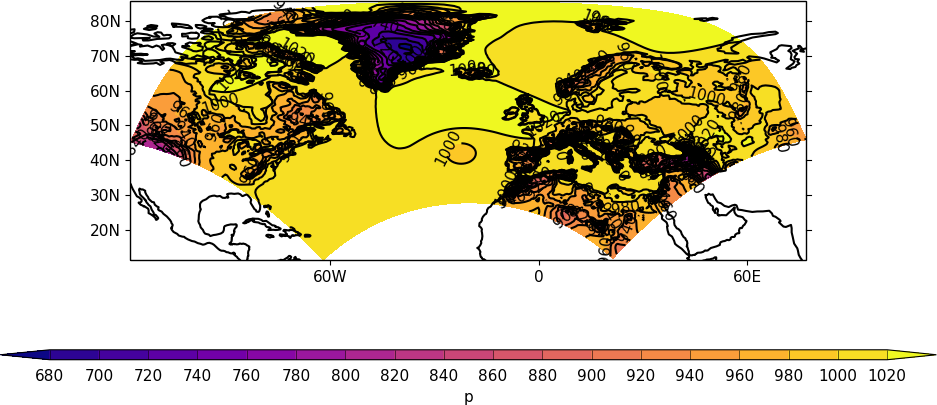

Rotated pole plots¶
Example 21 - rotated pole data plot¶
{kind=link}
import cf
import cfplot as cfp
f=cf.read('cfplot_data/rgp.nc')[0]
cfp.cscale('plasma')
cfp.con(f)
Example 22 - rotated pole data on the native grid¶
This plot shows some rotated pole data on the native grid. Notice the way that the longitude lines are warped away from the centre of the plot. Data over the equatorial regions show little of this warping.
{kind=link}
import cf
import cfplot as cfp
f=cf.read('cfplot_data/rgp.nc')[0]
cfp.cscale('plasma')
cfp.mapset(proj='rotated')
cfp.con(f)
Example 23 - Overlaying vectors over a rotated pole data plot¶
In this plot a cylindrical projection plot of rotated pole data is overlayed with wind vectors.
Care is needed when making vector plots as the vectors can be of two forms:
a) eastward wind and westward wind are relative to longitude and latitude axes
b) x-wind and y-wind are relative to the rotated pole axes
Here we have eastward and westward wind so these can be plotted as normal over a cylindrical projection. For the case of data in case b) above, the x-wind and y-wind will need to be appropriately rotated onto a cylindrical grid.

import cf
import cfplot as cfp
f=cf.read('cfplot_data/20160601-05T0000Z_INCOMPASS_km4p4_uv_RH_500.nc')
cfp.mapset(50, 100, 5, 35)
cfp.levs(0, 90, 15, extend='neither')
cfp.gopen()
cfp.con(f[0], lines=False)
cfp.vect(u=f[1], v=f[2], stride=40, key_length=10)
cfp.gclose()